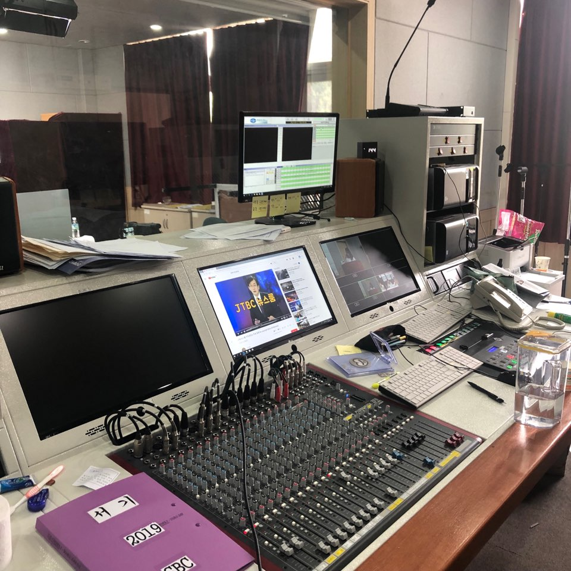

수습 국원 모집
방송에 관심 있는 새내기 여러분 환영합니다
교내 방속국에서 신입생을 대상으로 수습 국원을 모집합니다. 학부와 전공은 상관없습니다.
방송에 관심 있는 여러 학우의 지원 바랍니다
- 모집 기간 : 3월 2일 ~ 3월 11일
- 모집 분야 : 아나운서, PD, 엔지니어
- 지원 방법 : 양식 작성 후 이메일 접수
지원서 양식은 교내 방송국 홈페이지 공지 게시판에 있습니다.
혜택
- 수습기자 활동 중 소정의 활동비 지급
- 정기자로 진급하면 장학금 지급
